R/summarise_wastd_data.R
ggplot_total_emergences_per_area_season_species.RdFacets: species
ggplot_total_emergences_per_area_season_species(data)The output of total_emergences_per_area_season_species, a
summary of wastd_data.
A ggplot2 figure
Other wastd:
add_nest_labels(),
disturbance_by_season(),
filter_alive(),
filter_dead(),
filter_disturbance(),
filter_predation(),
ggplot_disturbance_by_season(),
ggplot_emergence_success(),
ggplot_hatching_success(),
ggplot_hatchling_misorientation(),
ggplot_nesting_success_per_area_season_species_pct(),
ggplot_nesting_success_per_area_season_species(),
ggplot_sighting_status_per_area_season_species(),
ggplot_track_success_by_date(),
ggplot_track_successrate_by_date(),
hatching_emergence_success_area(),
hatching_emergence_success_site(),
hatching_emergence_success(),
map_dist(),
map_fanangles(),
map_mwi(),
map_nests(),
map_tracks(),
map_wastd_wamtram_sites(),
map_wastd(),
nesting_success_per_area_day_species(),
nesting_success_per_area_season_species(),
nesting_type_by_area_season_age_species(),
nesting_type_by_area_season_species(),
nesting_type_by_season_age_species(),
nesting_type_by_season_calendarday_age_species(),
nesting_type_by_season_calendarday_species(),
nesting_type_by_season_day_species(),
nesting_type_by_season_species(),
nesting_type_by_season_week_age_species(),
nesting_type_by_season_week_site_species(),
nesting_type_by_season_week_species(),
nesting_type_by_site_season_age_species(),
nesting_type_by_site_season_species(),
parse_animal_encounters(),
parse_area_sf(),
parse_area(),
parse_encounterobservations(),
parse_surveys(),
parse_turtle_nest_encounters(),
print.wastd_api_response(),
sighting_status_per_area_season_species(),
sighting_status_per_site_season_species(),
summarise_hatching_and_emergence_success(),
summarise_wastd_data_per_day_site(),
total_emergences_per_area_season_species(),
total_emergences_per_site_season_species(),
track_success_by_species(),
track_success(),
tracks_ts()
data(wastd_data)
wastd_data %>%
total_emergences_per_area_season_species() %>%
ggplot_total_emergences_per_area_season_species()

wastd_data %>%
total_emergences_per_area_season_species() %>%
ggplot_total_emergences_per_area_season_species() %>%
plotly::ggplotly()